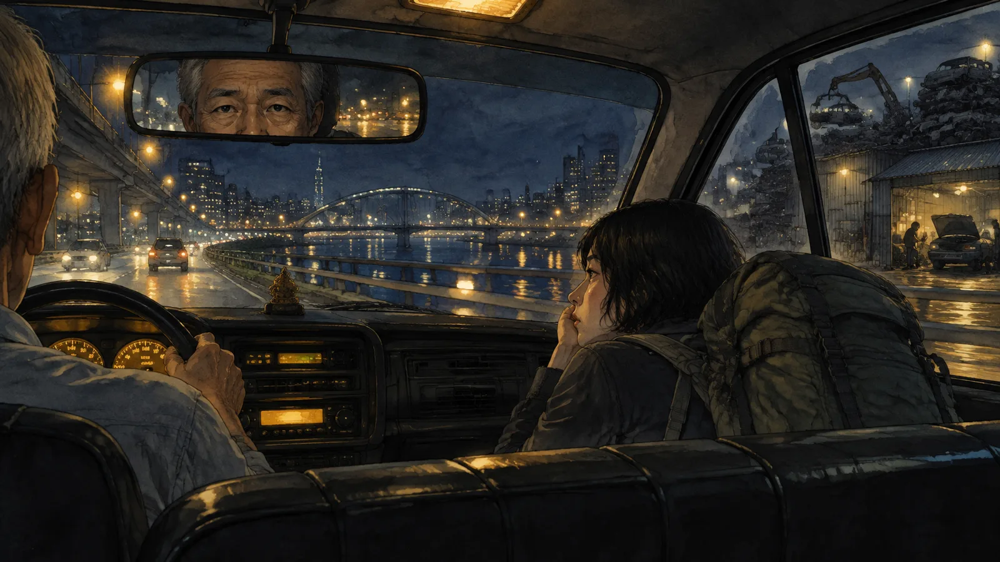
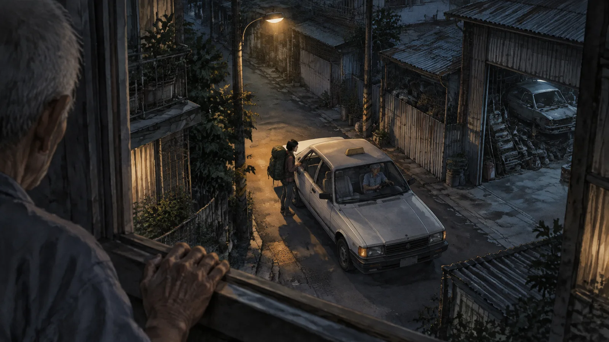
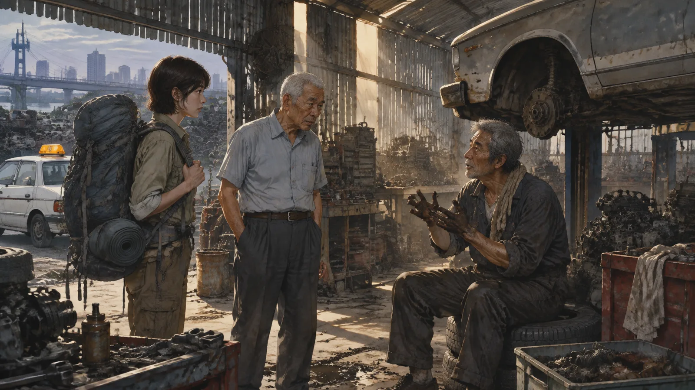
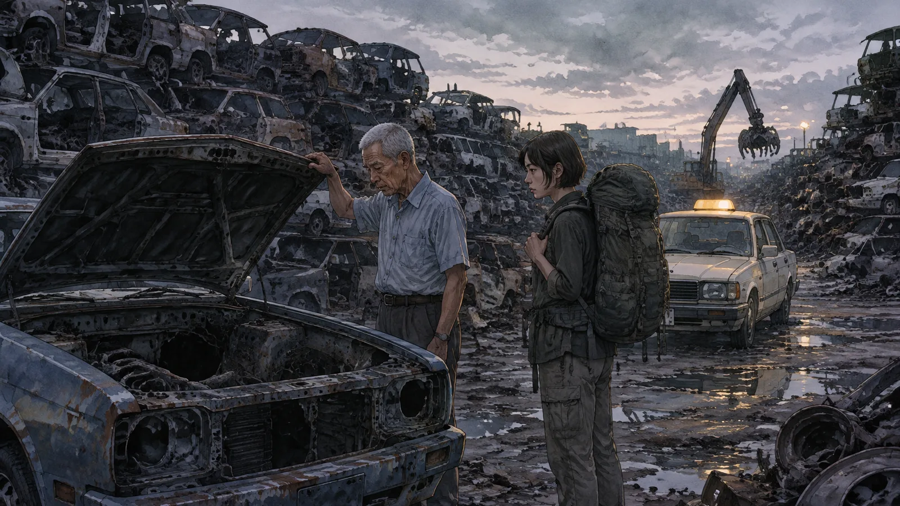
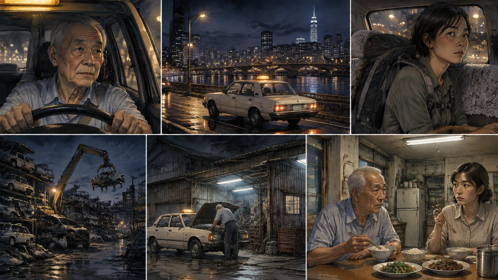
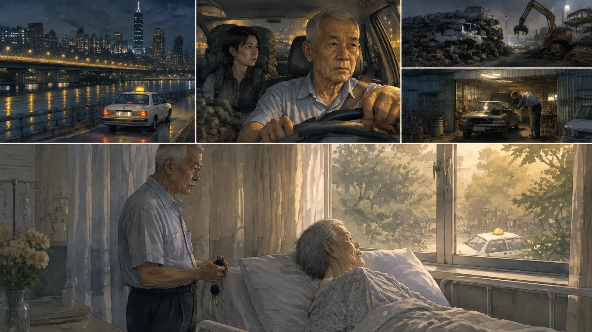
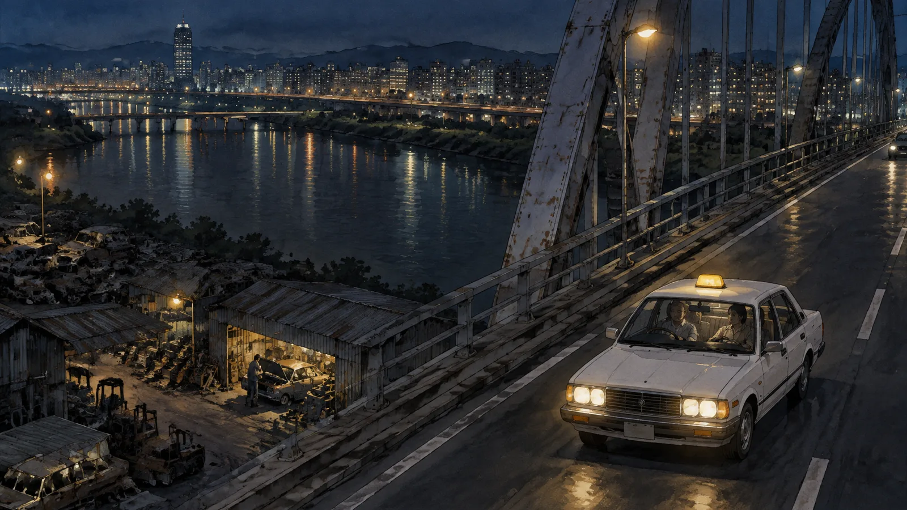
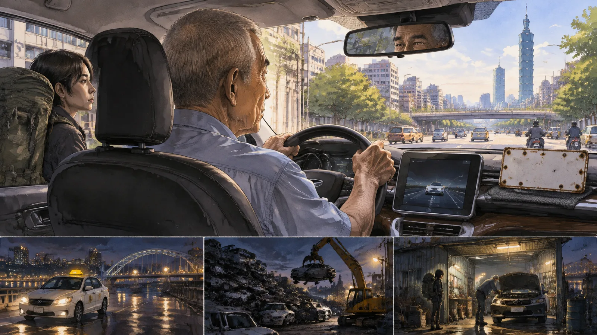

第一章車牌
老簡的計程車是一九九八年的。
這是他跟每一個問的乘客說的話。「一九九八年，裕隆的，我買的時候三十二歲。」乘客通常會「哇」一聲，然後往車內看一圈，找一九九八年的痕跡。找不到。座椅是新的，儀表板是新的，音響是新的，方向盤是新的。引擎是二〇一一年換的，變速箱是二〇一五年，車門——四扇門，在不同的年份，因為不同的原因，一扇一扇換掉了。車頂是二〇一九年一場冰雹之後換的。底盤是二〇二二年，因為鏽穿了。
「那什麼是一九九八年的？」有一次一個乘客問。
老簡想了一下。
「車牌。」他說。
那個乘客笑了。老簡沒有笑。他覺得這個答案沒有什麼好笑的。車牌是一九九八年的，白底黑字，掛在一台已經沒有任何一個零件是一九九八年的車上。監理站的紀錄上，這台車是一九九八年出廠的。保險公司的紀錄上也是。老簡自己的記憶裡也是——他記得買它的那一天，記得第一次載客的那一天，記得他女兒出生那天他是開這台車去醫院的。
他開了二十七年。
第二章乘客
那個女生是在一個星期二的晚上上車的。

三十歲左右，背一個很大的背包，在台大側門上車，說去板橋。她坐後座，一上車就把頭靠在窗戶上，看外面。老簡沒有跟她講話。他開了二十七年，知道什麼樣的乘客想講話，什麼樣的不想。
可是過了羅斯福路，她忽然說：「這台車很老了。」
「一九九八年的。」老簡說。
「哇。」她說。然後她往車內看了一圈。「可是看起來很新。」
「零件都換過了。」
「全部？」
「全部。」
女生安靜了一會兒。然後她問了那個問題，用一種老簡沒有聽過的方式問。
「那它還是同一台車嗎？」
老簡從後照鏡看她。她不是在開玩笑。她的表情很認真，像在問一個她真的不知道答案的問題。
「妳是做什麼的？」
「以前念哲學。」她說，「博士。沒念完。」
「哲學也問這個？」
「這是哲學最老的問題之一。」她說，「兩千年前就有人問了。一艘船，木板一塊一塊換掉，換到最後沒有一塊是原本的。那還是同一艘船嗎？」
「他們怎麼說？」
「吵了兩千年。」女生說，「沒有答案。」
老簡開過中正橋。橋下的河是黑的，河面上有燈的倒影。
「那妳覺得呢？」他問。
「我不知道。」她說，「所以我沒念完。」
第三章零件
那天晚上老簡回到家，睡不著。
他躺在床上，想那個問題。他以前不覺得這是一個問題。車就是車，壞了就修，修不好就換零件，換了零件還是這台車。他從來沒有想過「這還是同一台車嗎」，因為這台車一直在他手上，一天都沒有離開過。它是同一台，因為它一直是他的。
可是現在他躺在床上，開始想每一個零件。
引擎是二〇一一年換的。那年他五十五歲，車在北宜公路上拋錨，拖回台北，修車廠的老陳說引擎報廢了。他換了一個中古的，是從另一台報廢的裕隆上拆下來的。所以他的車的心臟，是另一台車的。
那另一台車呢？它的車牌被註銷了，車身被壓成廢鐵。它的引擎在他的車裡跑了十四年。它算死了嗎？還是它有一部分活在他的車裡？
他想到更多。座椅是從一台計程車行淘汰的車上拆的。車門有一扇是原廠的新品，可是有三扇是拆車場的，來自三台不同的車。他的車是由至少六台車的零件組成的。它是一台車，還是六台車的墓？
他起來，走到窗邊，往下看。車停在巷子裡，路燈下面，白色的，跟每一天一樣。

他忽然覺得他不認識它。
第四章修車廠
第二天他去找老陳。
老陳的修車廠在三重，一間鐵皮屋，老簡在那裡修了二十七年的車。老陳六十八歲，比他大三歲，手上永遠是黑的。
「阿簡，車又怎麼了？」
「沒怎麼。」老簡說，「我問你一件事。」
他把那個問題講了。老陳聽完，擦了擦手，坐在一個輪胎上。
「你是在問，」老陳說，「這台車還是不是一九九八年那一台？」
「對。」
老陳想了很久。他這輩子修過幾千台車，換過幾萬個零件，從來沒有人問過他這個。

「我跟你講一個事。」他說，「我這裡有一台車，一台老賓士，一個老先生的。他每年來保養一次，每次都換一點東西。二十年了。去年他過世了，他兒子把車開來，說要賣。我幫他估價。」
「然後？」
「我打開引擎蓋，看了一下，發現裡面沒有一個東西是原廠的。全部是我換的。我換了二十年。」老陳說，「我跟他兒子說，這台車是我做的。」
「他兒子怎麼說？」
「他說，可是我爸開了二十年。」老陳笑了，「他說得對。我做的是零件。他爸開的是車。」
老簡看著他。
「阿簡，」老陳說，「零件是我換的。可是那台車每天是誰在開？誰知道它在幾公里的時候會抖？誰知道它冷天要熱車三分鐘？誰知道它右邊的煞車比左邊靈？」
「我。」
「那就是你的車。」老陳說，「零件不會記得這些。你會。」
第五章拆車場
星期三下午沒有客人，老簡開去了桃園。
拆車場在一條產業道路的盡頭，很大，一眼看不到邊，全部是車。疊起來的，壓扁的，拆到只剩骨架的。他在這裡買過三扇車門、一組座椅、一個後視鏡。老闆姓黃，五十幾歲，跟他認識十幾年。
「阿簡，要什麼？」
「不要什麼。」老簡說，「來看看。」
黃老闆沒有問看什麼。他讓老簡自己走。
老簡走進那些車之間。一台一台。有的還看得出來是什麼車，有的已經看不出來了。他走到一台裕隆前面——跟他的同一款，一九九〇年代的，車身是藍的，引擎蓋開著，裡面是空的。引擎已經被拆走了。

他站在那裡看。他想，我的引擎，是不是也是從一台這樣的車裡拆出來的。那台車的主人是誰？開了幾年？載過誰？它在拋錨的那一天，主人是什麼心情？
他不知道。沒有人知道。那台車被壓扁，車牌註銷，紀錄消失。可是它的引擎在他的車裡跑了十四年，每天早上他發動的時候，是它在動。
黃老闆走過來，站在他旁邊。
「你在看什麼？」
「我在想，這台車死了嗎？」
黃老闆看了一眼那台藍色的裕隆。
「我做這行三十年，」他說，「我跟你講，沒有一台車是死的。」
「什麼意思？」
「這台車的引擎在別的車裡。門在別的車裡。座椅在別的車裡。每一個零件都在跑。」黃老闆說，「你說它死了，可是它的每一個部分都在路上。你要說哪一個是它？」
老簡看著那個空的引擎室。
「那什麼是死的？」
黃老闆想了一下。
「沒有人記得的。」他說，「零件還在跑，可是沒有人知道那是它的。那才是死。」
他拍了拍老簡的肩膀，走了。
老簡在那台藍色的裕隆前面站了很久。他伸手摸了摸它的引擎蓋。鐵的，涼的，有一點鏽。他想，如果我的引擎是你的，那我每天在替你記得。
他不知道這樣算不算。
第六章女兒
老簡的女兒叫簡沛，三十四歲，在新竹做工程師。
她是那台車載去醫院出生的。她小時候坐在後座上寫功課，國中的時候坐在後座上跟他吵架，高中的時候坐在後座上不講話。她考上大學那天，是他開這台車送她去宿舍的。
她每個月回來一次。那個星期六她回來，老簡在吃飯的時候問她：

「沛沛，妳覺得我的車，還是一九九八年那一台嗎？」
簡沛看著他，筷子停在半空中。
「爸，你在說什麼？」
「有一個乘客問我。零件都換過了，還是不是同一台。」
簡沛想了一下。她是工程師，她想事情的方式跟老簡不一樣。
「從物理上講，不是。」她說，「沒有一個原子是一樣的。」
「那從別的講呢？」
「爸，」她說，「你的身體，每七年細胞就全部換過一遍。你現在身上沒有一個細胞是一九九八年的。你還是你嗎？」
老簡愣住了。
「你六十八歲了。」簡沛說，「你的膝蓋換過一個。你的牙齒有一半是假的。你的心臟放了一根支架。你的血每天都在換。你還是你嗎？」
「我——」
「我覺得是。」簡沛說，「因為你一直記得你是誰。你記得買車那天。你記得我出生那天。零件換了，記憶沒有換。」
她低下頭吃飯。過了一會兒，她又抬起頭。
「可是爸，如果有一天你的記憶也換了呢？」
老簡沒有回答。他知道她在說什麼。他的父親，簡沛的阿公，八十歲以後失智，最後三年不認得任何人。那三年他還是他嗎？
「那就要靠別人記得了。」老簡說。
第七章阿公
他去了安養院。
不是探望——他父親十年前就過世了。他去的是那間安養院，因為那個問題一直在他腦子裡：一個記憶換掉的人，還是不是同一個人。
安養院還在，換了名字。他站在門口，看著裡面的老人坐在輪椅上，看著電視，或者看著窗外。他想起父親最後那三年。
第一年，父親還認得他，可是會問他「你什麼時候結婚」——他那時候結婚二十年了。第二年，父親不認得他，可是認得那台車。他每次開車去，父親會站在窗邊，聽到那個引擎聲——二〇一一年換的那個引擎——就說「阿簡來了」。他不認得走進來的人，可是認得車的聲音。
第三年，父親什麼都不認得了。他坐在床上，看著天花板。老簡跟他講話，他不回。老簡握他的手，他不動。
有一天，老簡在病房裡，忽然按了一下車鑰匙上的按鈕。車在樓下，喇叭響了兩聲。

父親的頭轉過來了。
很慢。可是轉過來了。他看著窗戶的方向，嘴巴動了一下。老簡靠過去聽。
「車。」父親說。
就一個字。然後他又看回天花板。
老簡站在安養院門口，想起那個字。他想，父親最後認得的不是他，是車。可是那台車是他的。車的聲音是他每天發動的。父親認得的，是「阿簡每天開來的那個聲音」。他認得的不是一個人，是一件一直在做的事。
他想，也許這就是了。一個人不是他的零件，不是他的記憶。是他一直在做的那件事。零件會換，記憶會掉。可是「每天開車來看爸爸」這件事，是他做的，到最後一天都是。
父親認得的是那個。
他走了。他沒有進去。他開車回台北，開得很慢。
第八章乘客（二）
那個女生又上車了。
一個月後，同一個地方，台大側門，同一個背包。她上車看到是他，愣了一下，然後笑了。
「一九九八年的。」她說。
「對。」
「你有想過那個問題嗎？」
「想了一個月。」
「然後呢？」
老簡開過羅斯福路。他把想過的事情一件一件跟她講。老陳的話，女兒的話，他父親的事。他講了很久，講到過了中正橋。

女生聽完，安靜了很久。
「你比我念的那些書都好。」她說。
「我沒念過書。」
「所以才好。」她說，「書裡的人只是在想。你是在開。」
她看著窗外。
「我念哲學的時候，」她說，「我的老師說，這個問題沒有答案，因為『同一』不是一個事實，是一個決定。一艘船是不是同一艘，要看誰在問，為什麼問。海關問，是為了收稅。船長問，是為了知道要不要信任它。船員問，是為了知道要不要留下來。每個人的答案都不一樣。」
「那妳問我，是為什麼？」
女生沉默了很久。
「因為我在想我自己。」她說，「我三十歲了。我二十歲的時候想的事，現在一件都不想了。我念哲學是因為我想知道人為什麼活著，現在我在一間公司做行銷，想的是怎麼讓人買東西。我的朋友都換了，我的房間換了，我的想法換了。我媽說我變了一個人。」她停了一下，「我想知道，我還是不是同一個人。」
老簡看著後照鏡。
「妳記得妳二十歲的時候嗎？」
「記得。」
「妳記得妳為什麼想念哲學嗎？」
「記得。」
「那妳就還是。」老簡說，「零件換了，車牌沒換。」
女生笑了。她的眼睛紅紅的。
「你的車牌是什麼？」她問，「你自己的。」
老簡想了很久。車開到板橋。他在她說的巷口停下來。
「我不知道。」他說，「可能是——我一直在開這台車。二十七年。這件事沒有換過。」
女生下車。她付了錢，站在車門口，彎腰看他。
「謝謝。」她說，「我大概知道我的車牌是什麼了。」
「是什麼？」
「我一直在問。」她說，「這件事沒有換過。」
尾聲
老簡的車在二〇二六年報廢了。
不是壞了。是法規——計程車的車齡上限，一九九八年的車已經超過太久了，監理站不給驗。他去辦手續的那天，把車牌拆下來，帶回家。
他買了一台新的。二〇二六年的，電動的，什麼都不一樣。他開了一個星期，覺得很奇怪，像穿別人的鞋。
第二個星期，他把那塊舊車牌拿出來，放在新車的儀表板上。不是掛——那是違法的——只是放著，在他每天看得到的地方。

一個乘客問：「這是什麼？」
「我以前的車。」老簡說，「一九九八年的。」
「這台不是新車嗎？」
老簡看了看儀表板上的車牌，又看了看方向盤。他的手放在方向盤上，跟過去二十七年一樣的位置，一樣的角度。
「零件是新的。」他說，「開的人是舊的。」
乘客笑了。老簡也笑了。這次他覺得，這個答案是可以笑的。
（完）
留言板
看不懂、想補充、發現錯誤都歡迎留言；填個暱稱就能發。